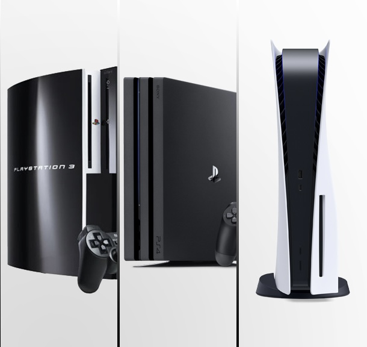

Twenty years of hardware, from the PS3 to the PS5.

Sony has released three home consoles since 2006. The PlayStation 3 arrived in November 2006, the PlayStation 4 followed seven years later in November 2013, and the PlayStation 5 launched in November 2020. Each machine ran for roughly seven years as the current model, and each one sold to a far wider audience than the last two generations of any competing console.
The three generations are not just faster versions of each other. The PS3 used a unique processor called the Cell, which was powerful but hard for developers to work with. With the PS4, Sony moved away from that design and used hardware that was more similar to a normal PC. This made developing games much easier. The PS5 kept a similar setup to the PS4 but focused more on improving storage. Its custom SSD made loading times much faster and gave developers more freedom when creating games.
When comparing all three generations, the biggest difference was not the graphics, but how easy each console made it for developers to build games.